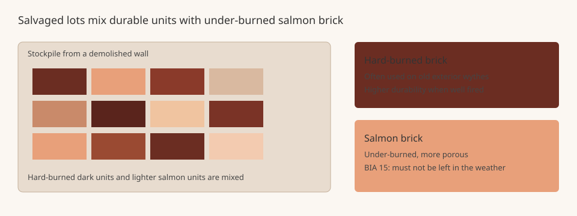

Mortar Smash › Trade guides › Salvaged or reclaimed brick
Reclaimed brick is often chosen for a weathered look or a lower first cost. That is not the same as choosing a unit with a known weathering grade. The Brick Industry Association's Technical Note 15 (May 1988) is the source for the cautions on this page. The note is almost four decades old, and the building-code editions it quotes have been superseded. Treat it as background from BIA, then confirm the current code, the standard specified for new units, and the project specification.
Short answer
BIA 15 warns against treating salvaged brick as equivalent to new brick. Lots from demolished walls mix hard-burned, durable units with under-burned "salmon" brick that must not be left in the weather. Surfaces often still hold old mortar, which weakens bond to new mortar and can let more water in. If salvaged units are proposed, they need the same quality approval the job would require of new masonry units.
Why a used brick is not a known grade
Most salvaged brick, the 1988 note says, comes from buildings that stood 40 to 50 years or more. Older periodic and scove kilns had large temperature variations. Units from the hot zones were hard-burned, strong and durable. Units from the cooler zones were under-burned, weaker, more porous, slightly larger and lighter in color. That pinkish-orange color is why they were called salmon brick. In thick loadbearing walls, the hard units went on the exterior wythes and the salmons were used inside, out of the weather. Masons sorted them on site.
When those walls are demolished, the 1988 note says, hard-burned brick and salmons are hopelessly mixed, and it is virtually impossible to distinguish durable from non-durable units by eye. A sample drawn from the pile will contain both, and an average absorption or strength test will sit between the two grades without describing either one. That makes it difficult to show that the lot meets a present-day material specification or code requirement. See brick frost resistance grades for how new units are graded for freeze-thaw exposure.
Bond, water and exposure
Technical Note 15 calls two common arguments fallacious: that brick can always be reused because brick is extremely durable, and that a unit that was satisfactory in the old wall is satisfactory now. When brick is first laid, it absorbs particles of cementitious material that cannot be completely cleaned from the surface. On salvaged units, pores may also hold lime, dirt and other matter, and many bedding faces still carry old mortar. The note says the bond between new mortar and old mortar is not very strong, and that bond to salvaged brick is considerably less than to similar new brick. Weaker bond means more risk of water at the joints and less strength under lateral load. With thinner modern walls, salmon brick that once hid in a backup wythe can end up on the weather face, where the note says masonry of salvaged brick is quite likely to spall, flake, pit and crack in freeze-thaw conditions.
Because moisture is more likely to be present, the 1988 note also says salvaged brick should not be used for exterior patios, walks or pavements. It quotes older model-code language that second-hand units must be approved as to quality, condition and compliance with the requirements for new units, and that units salvaged from chimneys are not recommended because they may be impregnated with oils or tarry material. Those quotations are from codes current in 1988. Do not treat them as the rule that governs a job today; ask the authority and the specifier what the current adopted code requires.
If the aim is a varied, weathered appearance, new facing brick can be specified for that look with a known grade and Type. See which bricks for which jobs and facing brick types FBX, FBS and FBA. For matching mortar on old walls, see lime vs cement mortar and how to repoint brick.

Salvaged or reclaimed brick FAQ
Can I use bricks from a demolished building in a new exterior wall?
Only with caution, and only if the current code and the project specification allow it after the units are approved for quality. BIA Technical Note 15 (May 1988) says it is a fallacy to assume that because brick is durable, or was satisfactory in the old wall, it is satisfactory now. Hard-burned and under-burned units are mixed during wrecking, bond to new mortar is weaker, and salmon brick must not be exposed to weathering. Confirm today's code; the editions quoted in the 1988 note are no longer the model codes in force.
What are salmon brick?
Technical Note 15 describes salmon brick as under-burned units from older kilns with large temperature variations. They were more porous, slightly larger and lighter in color, often a pinkish-orange, and were typically used in interior wythes of thick loadbearing walls, not on the weather face. The note says that pink color comes from under-burning, which produces units that must not be exposed to weathering.
Why is mortar bond weaker on salvaged units?
The 1988 note says that when brick first meets mortar it absorbs particles of cementitious material that cannot be completely cleaned out. Pores may also hold lime, dirt and other matter, and many bedding faces still carry old mortar. Bond between new mortar and old mortar is not very strong, and the note says bond to salvaged brick is considerably less than to similar new brick.
Sources
Figures and uses are quoted or condensed from the sources above, which were read on 12 November 2026. Codes and project specifications differ by country and job; where they conflict with this page, follow them.
Published 12 November 2026 by Mortar Smash. General information only, not engineering or code advice.